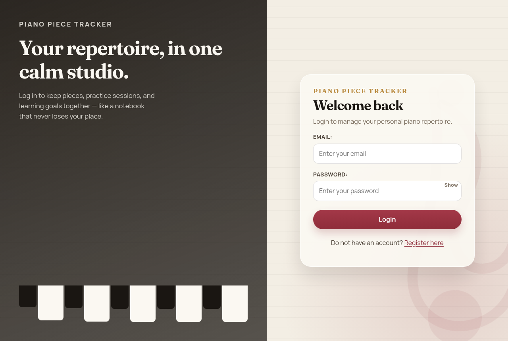
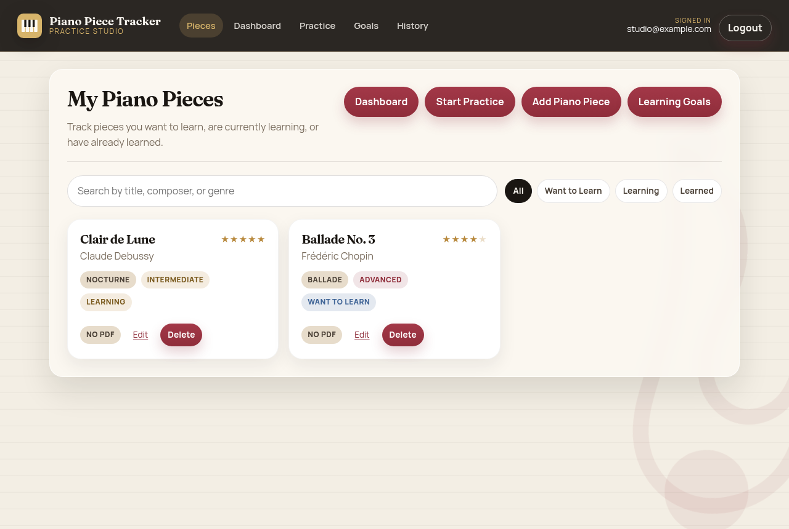
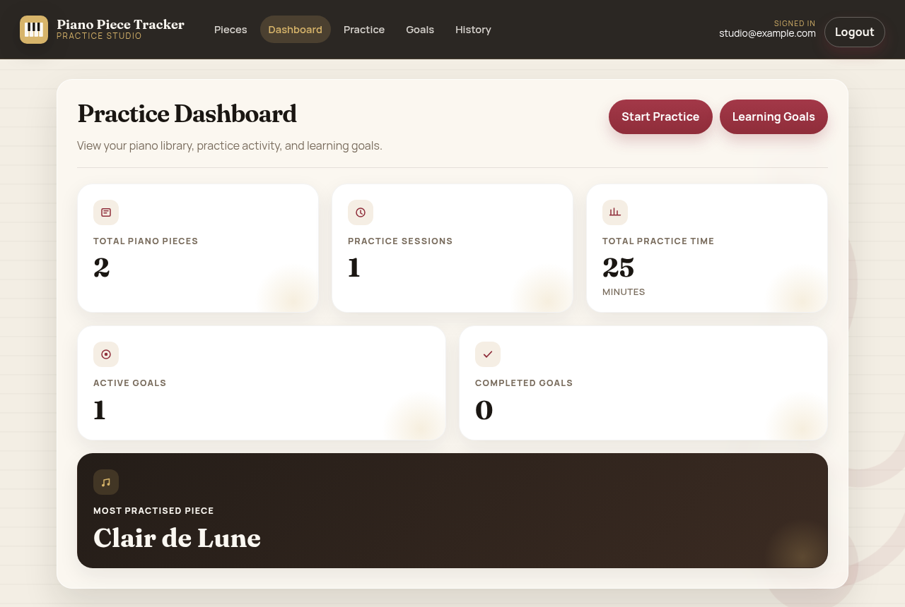
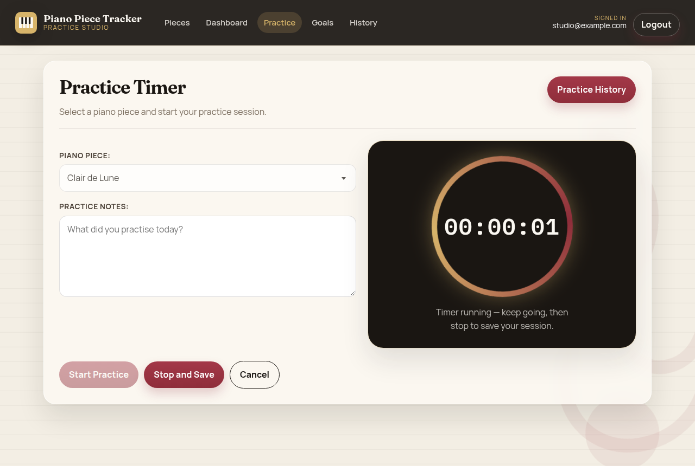

Piano Piece Tracker
A Spring Boot studio for your piano repertoire: pieces, sheet music, timed practice, and learning goals. This GitHub Pages site is a clickable preview of the redesigned UI.

One-minute video tour
What this project does
- Register and log in to a personal repertoire.
- Add, edit, and delete piano pieces with composer, genre, difficulty, learning status, and rating.
- Attach sheet-music PDFs.
- Time a practice session and keep notes.
- Set learning goals with a target number of minutes and a deadline.
- See totals on the practice dashboard.
Pages in this preview



How the app is built
This is a layered Spring Boot 4 application on Java 21. The browser talks to Thymeleaf pages and to a JSON API under /api/v1/. Both fronts share the same security, services, and MySQL database. Sheet-music PDFs go to Amazon S3.
Request path
- The browser hits a URL such as
GET /piecesorPOST /practice/save. - Spring Security runs first. Login, register, CSS, and JS are public; everything else needs a user.
- The JWT filter reads the httpOnly
jwtcookie (or a Bearer header), checks the token, and loads the user by email. - A controller calls a service. The service uses a repository scoped to that user.
- Page controllers return a Thymeleaf template. REST controllers return JSON.
Data model
A user owns piano pieces, practice sessions, and learning goals. Each piece has a composer and optional sheet music in S3. Practice time feeds history and goal progress.
| Layer | Where | Role |
|---|---|---|
| Pages | Home, Practice, Goals, Dashboard controllers | HTML forms and lists |
| REST | /api/v1/ controllers |
JSON for auth, pieces, sessions |
| Security | config |
JWT cookie, BCrypt, filter chain |
| Services | services |
Business rules and S3 uploads |
| Data | beans + repositories |
JPA entities in MySQL |
Turn on GitHub Pages
In the GitHub repo, open Settings → Pages. Set source to Deploy from a branch, branch main, folder /docs, then Save. The studio will be at this site after a minute.
Run the real Spring Boot app
GitHub Pages can only host static files, so login here is a preview. The live Java app still needs MySQL (or Docker) on port 50000.
git clone https://github.com/khvostiv/music-practice-management-system.git cd music-practice-management-system docker compose up --build
Then open http://localhost:50000.
Or with Maven and a local MySQL database named ajf:
./mvnw spring-boot:run
Project layout
src/main/java— Spring Boot controllers, security, services, and JPA entitiessrc/main/resources/templates— Thymeleaf pagessrc/main/resources/static— CSS and JavaScriptdocs/— this GitHub Pages preview